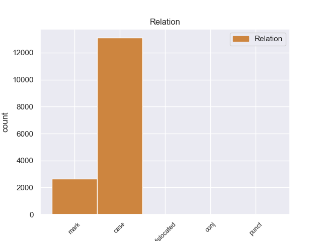
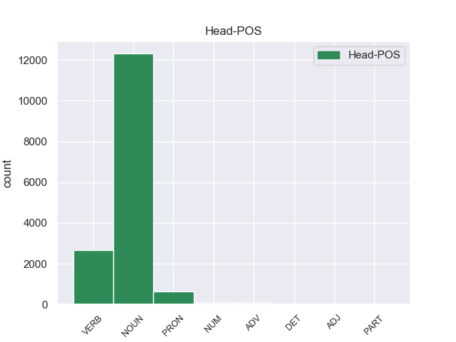
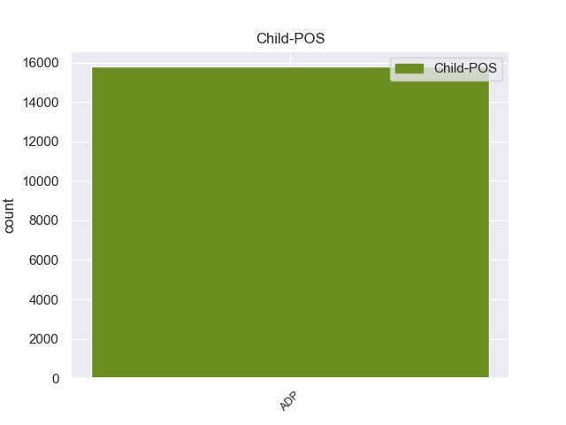

Distribution of features within this leaf



Morphosyntax Rules sorted by frequency.
- When the dependent token is the case marking(case) of the head token, and the head token is NOUN and the dependent token is ADP, the Case needs to be Nom.
1 इन _ _ _ _ 0 _ _ _
2 दोनों _ _ _ _ 0 _ _ _
3 देशों _ _ _ _ 0 _ _ _
4 के _ _ _ _ 0 _ _ _
5 बीच _ _ _ _ 0 _ _ _
6 रिश्ते _ _ _ _ 0 _ _ _
7 में _ _ _ _ 0 _ _ _
8 सुधार _ _ _ _ 0 _ _ _
9 से _ _ _ _ 0 _ _ _
10 करोड़ों _ _ _ _ 0 _ _ _
11 लोगों लोग NOUN NN Case=Acc|Gender=Masc|Number=Plur|Person=3 0 _ _ _
12 का का ADP PSP AdpType=Post|Case=Nom|Gender=Masc|Number=Sing 11 case _ ChunkId=NP4|ChunkType=child|Translit=kā
13 भला _ _ _ _ 0 _ _ _
14 होगा _ _ _ _ 0 _ _ _
15 । _ _ _ _ 0 _ _ _
1 हमें _ _ _ _ 0 _ _ _
2 लोगों _ _ _ _ 0 _ _ _
3 तक _ _ _ _ 0 _ _ _
4 गांधीवादी _ _ _ _ 0 _ _ _
5 संदेश _ _ _ _ 0 _ _ _
6 पहुंचाने पहुंचा VERB VM Case=Acc|Number=Sing|VerbForm=Inf 0 _ _ _
7 का का ADP PSP AdpType=Post|Case=Nom|Gender=Masc|Number=Sing 6 mark _ ChunkId=VGNN|ChunkType=child|Translit=kā
8 मौका _ _ _ _ 0 _ _ _
9 मिला _ _ _ _ 0 _ _ _
10 । _ _ _ _ 0 _ _ _
1 इसके यह PRON PRP Case=Acc,Gen|Number=Sing|Person=3|Poss=Yes|PronType=Prs 0 _ _ _
2 आगे आगे ADP NST AdpType=Post|Case=Nom|Gender=Masc|Number=Sing|Person=3 1 case _ AltTag=ADP-NOUN|ChunkId=NP|ChunkType=child|Translit=āge
3 इसी _ _ _ _ 0 _ _ _
4 तरह _ _ _ _ 0 _ _ _
5 की _ _ _ _ 0 _ _ _
6 कुछ _ _ _ _ 0 _ _ _
7 और _ _ _ _ 0 _ _ _
8 बातें _ _ _ _ 0 _ _ _
9 उसी _ _ _ _ 0 _ _ _
10 भाषा _ _ _ _ 0 _ _ _
11 में _ _ _ _ 0 _ _ _
12 थीं _ _ _ _ 0 _ _ _
13 । _ _ _ _ 0 _ _ _
1 इन _ _ _ _ 0 _ _ _
2 परीक्षार्थियों _ _ _ _ 0 _ _ _
3 में _ _ _ _ 0 _ _ _
4 से _ _ _ _ 0 _ _ _
5 एक _ _ _ _ 0 _ _ _
6 लाख _ _ _ _ 0 _ _ _
7 ७२ _ _ _ _ 0 _ _ _
8 हजार _ _ _ _ 0 _ _ _
9 २२२ _ _ _ _ 0 _ _ _
10 सफल _ _ _ _ 0 _ _ _
11 हुए _ _ _ _ 0 _ _ _
12 और _ _ _ _ 0 _ _ _
13 १३०२७ १३०२७ NUM QC Case=Acc|Number=Plur|NumType=Card 0 _ _ _
14 की का ADP PSP AdpType=Post|Case=Nom|Gender=Fem|Number=Sing 13 case _ ChunkId=NP3|ChunkType=child|Translit=kī
15 कंपार्टमेंट _ _ _ _ 0 _ _ _
16 आई _ _ _ _ 0 _ _ _
17 । _ _ _ _ 0 _ _ _
1 फिर _ _ _ _ 0 _ _ _
2 समझौता _ _ _ _ 0 _ _ _
3 तो _ _ _ _ 0 _ _ _
4 दूर दूर ADV NST AdpType=Post|Case=Nom|Gender=Masc|Number=Sing|Person=3 0 _ _ _
5 की का ADP PSP AdpType=Post|Case=Nom|Gender=Fem|Number=Sing 4 case _ ChunkId=NP2|ChunkType=child|Translit=kī
6 बात _ _ _ _ 0 _ _ _
7 है _ _ _ _ 0 _ _ _
8 । _ _ _ _ 0 _ _ _
1 इस _ _ _ _ 0 _ _ _
2 सम्मेलन _ _ _ _ 0 _ _ _
3 में _ _ _ _ 0 _ _ _
4 मध्य _ _ _ _ 0 _ _ _
5 प्रदेश _ _ _ _ 0 _ _ _
6 , _ _ _ _ 0 _ _ _
7 राजस्थान _ _ _ _ 0 _ _ _
8 , _ _ _ _ 0 _ _ _
9 झारखंड _ _ _ _ 0 _ _ _
10 और _ _ _ _ 0 _ _ _
11 गुजरात _ _ _ _ 0 _ _ _
12 सहित _ _ _ _ 0 _ _ _
13 सभी _ _ _ _ 0 _ _ _
14 प्रदेश प्रदेश NOUN NN Case=Acc|Gender=Masc|Number=Plur|Person=3 0 _ _ _
15 , _ _ _ _ 0 _ _ _
16 जहां _ _ _ _ 0 _ _ _
17 भाजपा _ _ _ _ 0 _ _ _
18 की _ _ _ _ 0 _ _ _
19 सरकार _ _ _ _ 0 _ _ _
20 है _ _ _ _ 0 _ _ _
21 , _ _ _ _ 0 _ _ _
22 के का ADP PSP AdpType=Post|Case=Nom|Gender=Masc|Number=Plur 14 dislocated _ ChunkId=FRAGP|ChunkType=head|Translit=ke
23 शिक्षा _ _ _ _ 0 _ _ _
24 मंत्री _ _ _ _ 0 _ _ _
25 सम्मेलन _ _ _ _ 0 _ _ _
26 में _ _ _ _ 0 _ _ _
27 भाग _ _ _ _ 0 _ _ _
28 लेंगें _ _ _ _ 0 _ _ _
29 । _ _ _ _ 0 _ _ _
1 लिहाजा _ _ _ _ 0 _ _ _
2 इसके _ _ _ _ 0 _ _ _
3 मुख्य _ _ _ _ 0 _ _ _
4 अपराधी _ _ _ _ 0 _ _ _
5 को _ _ _ _ 0 _ _ _
6 फांसी _ _ _ _ 0 _ _ _
7 से _ _ _ _ 0 _ _ _
8 कम कम DET QF Case=Acc|PronType=Ind 0 _ _ _
9 की का ADP PSP AdpType=Post|Case=Nom|Gender=Fem|Number=Sing 8 case _ ChunkId=NP4|ChunkType=child|Translit=kī
10 सजा _ _ _ _ 0 _ _ _
11 नहीं _ _ _ _ 0 _ _ _
12 दी _ _ _ _ 0 _ _ _
13 जा _ _ _ _ 0 _ _ _
14 सकती _ _ _ _ 0 _ _ _
15 । _ _ _ _ 0 _ _ _
1 मुजफ्फरनगर _ _ _ _ 0 _ _ _
2 के _ _ _ _ 0 _ _ _
3 उत्तर _ _ _ _ 0 _ _ _
4 प्रदेश _ _ _ _ 0 _ _ _
5 इमाम _ _ _ _ 0 _ _ _
6 संगठन _ _ _ _ 0 _ _ _
7 के _ _ _ _ 0 _ _ _
8 प्रदेश _ _ _ _ 0 _ _ _
9 अध्यक्ष _ _ _ _ 0 _ _ _
10 मुफ्ती _ _ _ _ 0 _ _ _
11 जुल्फिकार _ _ _ _ 0 _ _ _
12 का _ _ _ _ 0 _ _ _
13 कहना _ _ _ _ 0 _ _ _
14 है _ _ _ _ 0 _ _ _
15 कि _ _ _ _ 0 _ _ _
16 अमर _ _ _ _ 0 _ _ _
17 उजाला _ _ _ _ 0 _ _ _
18 बहुत _ _ _ _ 0 _ _ _
19 मयारी मयारी ADJ JJ Case=Nom 0 _ _ _
20 और _ _ _ _ 0 _ _ _
21 स्टेटस _ _ _ _ 0 _ _ _
22 वाला वाला ADP PSP AdpType=Post|Case=Nom|Gender=Masc|Number=Sing 19 case _ ChunkId=NP7|ChunkType=child|Translit=vālā
23 अखबार _ _ _ _ 0 _ _ _
24 है _ _ _ _ 0 _ _ _
25 । _ _ _ _ 0 _ _ _
1 इस _ _ _ _ 0 _ _ _
2 पर _ _ _ _ 0 _ _ _
3 विपक्ष _ _ _ _ 0 _ _ _
4 के _ _ _ _ 0 _ _ _
5 सदस्यों _ _ _ _ 0 _ _ _
6 ने _ _ _ _ 0 _ _ _
7 दागी _ _ _ _ 0 _ _ _
8 मंत्री _ _ _ _ 0 _ _ _
9 इस्तीफा _ _ _ _ 0 _ _ _
10 दें _ _ _ _ 0 _ _ _
11 या _ _ _ _ 0 _ _ _
12 उन्हें _ _ _ _ 0 _ _ _
13 बर्खास्त _ _ _ _ 0 _ _ _
14 करो कर VERB VM Mood=Imp|Number=Sing|Person=2|Polite=Infm|VerbForm=Fin|Voice=Act 0 _ _ _
15 के का ADP PSP AdpType=Post|Case=Nom|Gender=Masc|Number=Plur 14 case _ ChunkId=FRAGP|ChunkType=head|Translit=ke
16 नारे _ _ _ _ 0 _ _ _
17 लगाने _ _ _ _ 0 _ _ _
18 शुरू _ _ _ _ 0 _ _ _
19 कर _ _ _ _ 0 _ _ _
20 दिए _ _ _ _ 0 _ _ _
21 । _ _ _ _ 0 _ _ _
1 चिंतित _ _ _ _ 0 _ _ _
2 माताएं _ _ _ _ 0 _ _ _
3 और _ _ _ _ 0 _ _ _
4 टीचर _ _ _ _ 0 _ _ _
5 ' _ _ _ _ 0 _ _ _
6 अजनबियों _ _ _ _ 0 _ _ _
7 से _ _ _ _ 0 _ _ _
8 बात _ _ _ _ 0 _ _ _
9 मत _ _ _ _ 0 _ _ _
10 करो कर VERB VM Mood=Imp|Number=Plur|Person=2|Polite=Infm|VerbForm=Fin|Voice=Act 0 _ _ _
11 , _ _ _ _ 0 _ _ _
12 किसी _ _ _ _ 0 _ _ _
13 से _ _ _ _ 0 _ _ _
14 चॉकलेट _ _ _ _ 0 _ _ _
15 मत _ _ _ _ 0 _ _ _
16 लो _ _ _ _ 0 _ _ _
17 ' _ _ _ _ 0 _ _ _
18 जैसी जैसा ADP PSP AdpType=Post|Case=Nom|Gender=Fem|Number=Plur 10 conj _ ChunkId=FRAGP|ChunkType=head|Translit=jaisī
19 अनेक _ _ _ _ 0 _ _ _
20 घुट्टियां _ _ _ _ 0 _ _ _
21 पिलाती _ _ _ _ 0 _ _ _
22 हैं _ _ _ _ 0 _ _ _
23 । _ _ _ _ 0 _ _ _
1 इनके _ _ _ _ 0 _ _ _
2 अलावा _ _ _ _ 0 _ _ _
3 अकादमी _ _ _ _ 0 _ _ _
4 के _ _ _ _ 0 _ _ _
5 नौ _ _ _ _ 0 _ _ _
6 मौजूदा _ _ _ _ 0 _ _ _
7 महत्तर _ _ _ _ 0 _ _ _
8 सदस्यों _ _ _ _ 0 _ _ _
9 ( _ _ _ _ 0 _ _ _
10 फेलो _ _ _ _ 0 _ _ _
11 ) _ _ _ _ 0 _ _ _
12 का का ADP PSP AdpType=Post|Case=Nom|Gender=Masc|Number=Sing 13 punct _ ChunkId=FRAGP|ChunkType=child|Translit=kā
13 भी भी PART RP _ 0 _ _ _
14 अभिनंदन _ _ _ _ 0 _ _ _
15 किया _ _ _ _ 0 _ _ _
16 गया _ _ _ _ 0 _ _ _
17 । _ _ _ _ 0 _ _ _
1 ' _ _ _ _ 0 _ _ _
2 उन्होंने _ _ _ _ 0 _ _ _
3 कहा _ _ _ _ 0 _ _ _
4 कि _ _ _ _ 0 _ _ _
5 अब _ _ _ _ 0 _ _ _
6 जबकि _ _ _ _ 0 _ _ _
7 अमर _ _ _ _ 0 _ _ _
8 सिंह _ _ _ _ 0 _ _ _
9 ने _ _ _ _ 0 _ _ _
10 इस _ _ _ _ 0 _ _ _
11 बात _ _ _ _ 0 _ _ _
12 के _ _ _ _ 0 _ _ _
13 पुख़्ता _ _ _ _ 0 _ _ _
14 सबूत _ _ _ _ 0 _ _ _
15 पेश _ _ _ _ 0 _ _ _
16 कर _ _ _ _ 0 _ _ _
17 दिए _ _ _ _ 0 _ _ _
18 हैं _ _ _ _ 0 _ _ _
19 कि _ _ _ _ 0 _ _ _
20 विपक्षी _ _ _ _ 0 _ _ _
21 नेता _ _ _ _ 0 _ _ _
22 के _ _ _ _ 0 _ _ _
23 फ़ोन _ _ _ _ 0 _ _ _
24 टैपिंग _ _ _ _ 0 _ _ _
25 के _ _ _ _ 0 _ _ _
26 पीछे _ _ _ _ 0 _ _ _
27 केंद्र _ _ _ _ 0 _ _ _
28 का _ _ _ _ 0 _ _ _
29 हाथ _ _ _ _ 0 _ _ _
30 है _ _ _ _ 0 _ _ _
31 तो _ _ _ _ 0 _ _ _
32 इस _ _ _ _ 0 _ _ _
33 मामले _ _ _ _ 0 _ _ _
34 की _ _ _ _ 0 _ _ _
35 तुरंत _ _ _ _ 0 _ _ _
36 निष्पक्ष _ _ _ _ 0 _ _ _
37 जाँच _ _ _ _ 0 _ _ _
38 कराई _ _ _ _ 0 _ _ _
39 जानी _ _ _ _ 0 _ _ _
40 चाहिए _ _ _ _ 0 _ _ _
41 और _ _ _ _ 0 _ _ _
42 इस यह PRON PRP Case=Acc|Number=Sing|Person=3|PronType=Prs 0 _ _ _
43 ( _ _ _ _ 0 _ _ _
44 षड्यंत्र _ _ _ _ 0 _ _ _
45 ) _ _ _ _ 0 _ _ _
46 का का ADP PSP AdpType=Post|Case=Nom|Gender=Masc|Number=Sing 42 dislocated _ ChunkId=FRAGP|ChunkType=head|Translit=kā
47 पर्दाफ़ाश _ _ _ _ 0 _ _ _
48 करने _ _ _ _ 0 _ _ _
49 के _ _ _ _ 0 _ _ _
50 लिए _ _ _ _ 0 _ _ _
51 पूरे _ _ _ _ 0 _ _ _
52 प्रकरण _ _ _ _ 0 _ _ _
53 की _ _ _ _ 0 _ _ _
54 विस्तृत _ _ _ _ 0 _ _ _
55 जाँच _ _ _ _ 0 _ _ _
56 होनी _ _ _ _ 0 _ _ _
57 चाहिए _ _ _ _ 0 _ _ _
58 । _ _ _ _ 0 _ _ _
1 लेकिन _ _ _ _ 0 _ _ _
2 मुकाबले _ _ _ _ 0 _ _ _
3 से _ _ _ _ 0 _ _ _
4 पचास _ _ _ _ 0 _ _ _
5 करोड़ करोड NUM QC Case=Acc|NumType=Card 0 _ _ _
6 ( _ _ _ _ 0 _ _ _
7 १.११ _ _ _ _ 0 _ _ _
8 करोड़ _ _ _ _ 0 _ _ _
9 डॉलर _ _ _ _ 0 _ _ _
10 ) _ _ _ _ 0 _ _ _
11 की का ADP PSP AdpType=Post|Case=Nom|Gender=Fem|Number=Sing 5 dislocated _ ChunkId=FRAGP|ChunkType=head|Translit=kī
12 राशि _ _ _ _ 0 _ _ _
13 जुटाकर _ _ _ _ 0 _ _ _
14 क्रिकेटर _ _ _ _ 0 _ _ _
15 अपने _ _ _ _ 0 _ _ _
16 मकसद _ _ _ _ 0 _ _ _
17 में _ _ _ _ 0 _ _ _
18 कामयाब _ _ _ _ 0 _ _ _
19 हो _ _ _ _ 0 _ _ _
20 गए _ _ _ _ 0 _ _ _
21 । _ _ _ _ 0 _ _ _
1 जैसे _ _ _ _ 0 _ _ _
2 ही _ _ _ _ 0 _ _ _
3 राहुल _ _ _ _ 0 _ _ _
4 गाड़ी _ _ _ _ 0 _ _ _
5 में _ _ _ _ 0 _ _ _
6 बैठकर _ _ _ _ 0 _ _ _
7 जाने _ _ _ _ 0 _ _ _
8 लगे _ _ _ _ 0 _ _ _
9 वहां _ _ _ _ 0 _ _ _
10 मौजूद _ _ _ _ 0 _ _ _
11 लोगों _ _ _ _ 0 _ _ _
12 ने _ _ _ _ 0 _ _ _
13 ' _ _ _ _ 0 _ _ _
14 राहुल _ _ _ _ 0 _ _ _
15 वापस _ _ _ _ 0 _ _ _
16 जाओ जा VERB VM Mood=Imp|Number=Sing|Person=2|Polite=Infm|VerbForm=Fin|Voice=Act 0 _ _ _
17 ' _ _ _ _ 0 _ _ _
18 के का ADP PSP AdpType=Post|Case=Nom|Gender=Masc|Number=Plur 16 dislocated _ ChunkId=FRAGP|ChunkType=head|Translit=ke
19 नारे _ _ _ _ 0 _ _ _
20 लगाए _ _ _ _ 0 _ _ _
21 । _ _ _ _ 0 _ _ _
1 सूत्रों _ _ _ _ 0 _ _ _
2 का _ _ _ _ 0 _ _ _
3 यह _ _ _ _ 0 _ _ _
4 भी _ _ _ _ 0 _ _ _
5 दावा _ _ _ _ 0 _ _ _
6 है _ _ _ _ 0 _ _ _
7 कि _ _ _ _ 0 _ _ _
8 राजधानी _ _ _ _ 0 _ _ _
9 और _ _ _ _ 0 _ _ _
10 इसके _ _ _ _ 0 _ _ _
11 आस आस NOUN NSTC AdpType=Post|Case=Nom|Gender=Masc|Number=Sing|Person=3 0 _ _ _
12 - _ _ _ _ 0 _ _ _
13 पास पास ADP NST AdpType=Post|Case=Nom|Gender=Masc|Number=Sing|Person=3 11 conj _ AltTag=ADP-NOUN|ChunkId=NP5|ChunkType=child|Translit=pāsa
14 बब्बर _ _ _ _ 0 _ _ _
15 खालसा _ _ _ _ 0 _ _ _
16 ने _ _ _ _ 0 _ _ _
17 अपने _ _ _ _ 0 _ _ _
18 कुछ _ _ _ _ 0 _ _ _
19 ठिकाने _ _ _ _ 0 _ _ _
20 बना _ _ _ _ 0 _ _ _
21 लिए _ _ _ _ 0 _ _ _
22 थे _ _ _ _ 0 _ _ _
23 । _ _ _ _ 0 _ _ _
non-conforming Examples:
1 यहाँ _ _ _ _ 0 _ _ _
2 लगने _ _ _ _ 0 _ _ _
3 वाला _ _ _ _ 0 _ _ _
4 तीन _ _ _ _ 0 _ _ _
5 दिन _ _ _ _ 0 _ _ _
6 का _ _ _ _ 0 _ _ _
7 इज्तिमा _ _ _ _ 0 _ _ _
8 पूरे _ _ _ _ 0 _ _ _
9 देश देश NOUN NN Case=Acc|Gender=Masc|Number=Sing|Person=3 0 _ _ _
10 के का ADP PSP AdpType=Post|Case=Acc|Gender=Masc|Number=Plur 9 case _ ChunkId=NP4|ChunkType=child|Translit=ke
11 लोगों _ _ _ _ 0 _ _ _
12 को _ _ _ _ 0 _ _ _
13 आमंत्रित _ _ _ _ 0 _ _ _
14 करता _ _ _ _ 0 _ _ _
15 है _ _ _ _ 0 _ _ _
16 । _ _ _ _ 0 _ _ _
1 शौकत _ _ _ _ 0 _ _ _
2 महल _ _ _ _ 0 _ _ _
3 के _ _ _ _ 0 _ _ _
4 सामने _ _ _ _ 0 _ _ _
5 बड़ी _ _ _ _ 0 _ _ _
6 झील झील NOUN NN Case=Acc|Gender=Fem|Number=Sing|Person=3 0 _ _ _
7 के का ADP PSP AdpType=Post|Case=Acc|Gender=Masc|Number=Sing 6 case _ ChunkId=NP2|ChunkType=child|Translit=ke
8 किनारे _ _ _ _ 0 _ _ _
9 स्थित _ _ _ _ 0 _ _ _
10 वास्तुकला _ _ _ _ 0 _ _ _
11 का _ _ _ _ 0 _ _ _
12 यह _ _ _ _ 0 _ _ _
13 खूबसूरत _ _ _ _ 0 _ _ _
14 नमूना _ _ _ _ 0 _ _ _
15 कुदसिया _ _ _ _ 0 _ _ _
16 बेगम _ _ _ _ 0 _ _ _
17 के _ _ _ _ 0 _ _ _
18 काल _ _ _ _ 0 _ _ _
19 का _ _ _ _ 0 _ _ _
20 है _ _ _ _ 0 _ _ _
21 जिन्हें _ _ _ _ 0 _ _ _
22 गोहर _ _ _ _ 0 _ _ _
23 बेगम _ _ _ _ 0 _ _ _
24 भी _ _ _ _ 0 _ _ _
25 कहा _ _ _ _ 0 _ _ _
26 जाता _ _ _ _ 0 _ _ _
27 था _ _ _ _ 0 _ _ _
28 । _ _ _ _ 0 _ _ _
1 विशाल _ _ _ _ 0 _ _ _
2 क्षेत्र _ _ _ _ 0 _ _ _
3 में _ _ _ _ 0 _ _ _
4 फैले _ _ _ _ 0 _ _ _
5 इस _ _ _ _ 0 _ _ _
6 भवन भवन NOUN NN Case=Acc|Gender=Masc|Number=Sing|Person=3 0 _ _ _
7 के _ _ _ _ 0 _ _ _
8 आस _ _ _ _ 0 _ _ _
9 - _ _ _ _ 0 _ _ _
10 पास पास ADP NST AdpType=Post|Case=Acc|Gender=Masc|Number=Sing|Person=3 6 case _ AltTag=ADP-NOUN|ChunkId=NP2|ChunkType=child|Translit=pāsa
11 का _ _ _ _ 0 _ _ _
12 प्राकृतिक _ _ _ _ 0 _ _ _
13 सौंदर्य _ _ _ _ 0 _ _ _
14 इसे _ _ _ _ 0 _ _ _
15 और _ _ _ _ 0 _ _ _
16 भी _ _ _ _ 0 _ _ _
17 भव्य _ _ _ _ 0 _ _ _
18 बनाता _ _ _ _ 0 _ _ _
19 है _ _ _ _ 0 _ _ _
20 । _ _ _ _ 0 _ _ _
1 प्राकृतिक _ _ _ _ 0 _ _ _
2 सुंदरता _ _ _ _ 0 _ _ _
3 के _ _ _ _ 0 _ _ _
4 बीच _ _ _ _ 0 _ _ _
5 आप _ _ _ _ 0 _ _ _
6 विभिन्न _ _ _ _ 0 _ _ _
7 प्रकार प्रकार NOUN NN Case=Acc|Gender=Masc|Number=Sing|Person=3 0 _ _ _
8 के का ADP PSP AdpType=Post|Case=Acc|Gender=Masc|Number=Plur 7 case _ ChunkId=NP3|ChunkType=child|Translit=ke
9 शाकाहारी _ _ _ _ 0 _ _ _
10 और _ _ _ _ 0 _ _ _
11 माँसाहारी _ _ _ _ 0 _ _ _
12 प्राणियों _ _ _ _ 0 _ _ _
13 को _ _ _ _ 0 _ _ _
14 देखने _ _ _ _ 0 _ _ _
15 का _ _ _ _ 0 _ _ _
16 आनंद _ _ _ _ 0 _ _ _
17 उठा _ _ _ _ 0 _ _ _
18 सकते _ _ _ _ 0 _ _ _
19 हैं _ _ _ _ 0 _ _ _
20 । _ _ _ _ 0 _ _ _
1 छोटी _ _ _ _ 0 _ _ _
2 झील _ _ _ _ 0 _ _ _
3 में _ _ _ _ 0 _ _ _
4 एक _ _ _ _ 0 _ _ _
5 मछली मछली NOUN NN Case=Acc|Gender=Fem|Number=Sing|Person=3 0 _ _ _
6 के का ADP PSP AdpType=Post|Case=Acc|Gender=Masc|Number=Sing 5 case _ ChunkId=NP2|ChunkType=child|Translit=ke
7 आकार _ _ _ _ 0 _ _ _
8 का _ _ _ _ 0 _ _ _
9 एक्वेरियम _ _ _ _ 0 _ _ _
10 है _ _ _ _ 0 _ _ _
11 । _ _ _ _ 0 _ _ _